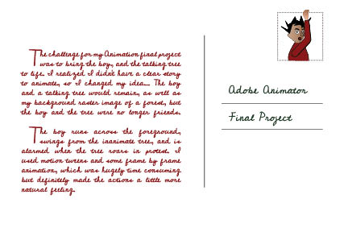

Introduction | Photoshop | Illustrator | Time Base Media | InDesign | Contact
You can see my InDesign Final Project here>
In contrast to the other software we’ve been working with, InDesign seemed straight-forward, until we came to the final project. Working with bleeds and ensuring all the images were the correct color mode, resolution and size was strangely time-consuming. The lesson I learned was that it’s really helpful to consider how your image is going to be used from the early stages of building an image. I think that I can use InDesign with my basic knowledge to create newsletters as part of our business’s e-marketing campaigns.